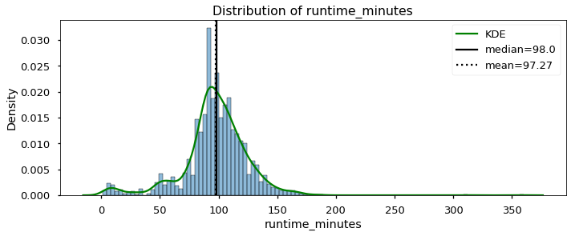
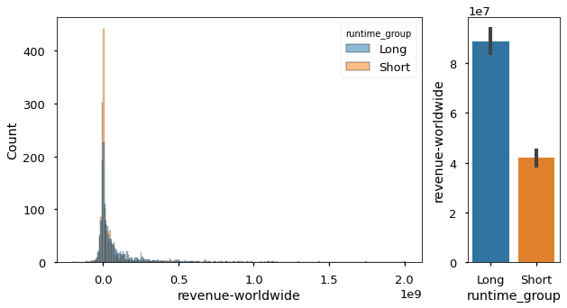
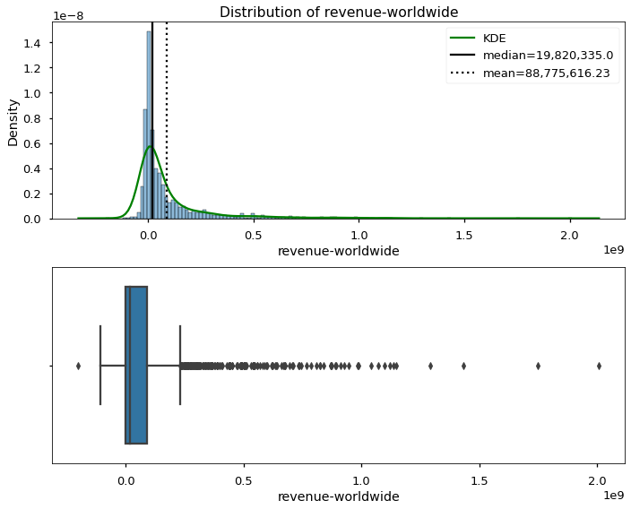
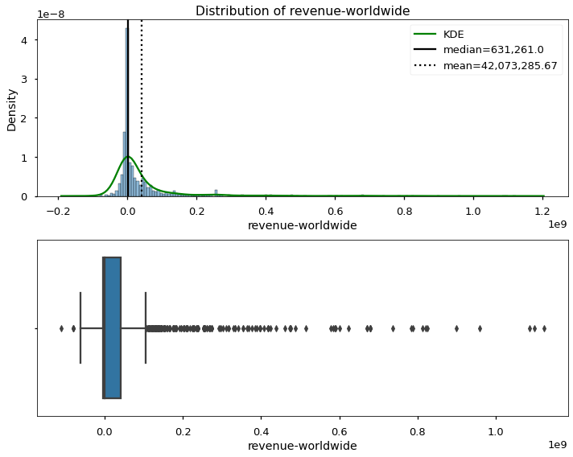

Practicing AB Testing with Movies#
## Importing our study group functions
%load_ext autoreload
%autoreload 2
import sys
py_folder = "../../py_files/"
sys.path.append(py_folder)
import functions_SG as sg
The autoreload extension is already loaded. To reload it, use:
%reload_ext autoreload
import pandas as pd
import matplotlib.pyplot as plt
import seaborn as sns
from scipy import stats
plt.style.use('seaborn-talk')
df = pd.read_csv('../topic_12_statistical_distributions/joined_movie_data_for_sg.csv')
display(df.head())
df.info()
| id | release_date | movie | production_budget | domestic_gross | worldwide_gross | tconst | primary_title | original_title | start_year | runtime_minutes | genres | revenue-domestic | revenue-worldwide | lost_money | roi-domestic | roi-worldwide | release_month | |
|---|---|---|---|---|---|---|---|---|---|---|---|---|---|---|---|---|---|---|
| 0 | 2 | 2011-05-20 | Pirates of the Caribbean: On Stranger Tides | 410600000.0 | 241063875.0 | 1.045664e+09 | tt1298650 | Pirates of the Caribbean: On Stranger Tides | Pirates of the Caribbean: On Stranger Tides | 2011 | 136.0 | Action,Adventure,Fantasy | -169536125.0 | 6.350639e+08 | True | -41.289850 | 154.667286 | 5 |
| 1 | 3 | 2019-06-07 | Dark Phoenix | 350000000.0 | 42762350.0 | 1.497624e+08 | tt6565702 | Dark Phoenix | Dark Phoenix | 2019 | 113.0 | Action,Adventure,Sci-Fi | -307237650.0 | -2.002376e+08 | True | -87.782186 | -57.210757 | 6 |
| 2 | 4 | 2015-05-01 | Avengers: Age of Ultron | 330600000.0 | 459005868.0 | 1.403014e+09 | tt2395427 | Avengers: Age of Ultron | Avengers: Age of Ultron | 2015 | 141.0 | Action,Adventure,Sci-Fi | 128405868.0 | 1.072414e+09 | False | 38.840250 | 324.384139 | 5 |
| 3 | 7 | 2018-04-27 | Avengers: Infinity War | 300000000.0 | 678815482.0 | 2.048134e+09 | tt4154756 | Avengers: Infinity War | Avengers: Infinity War | 2018 | 149.0 | Action,Adventure,Sci-Fi | 378815482.0 | 1.748134e+09 | False | 126.271827 | 582.711400 | 4 |
| 4 | 9 | 2017-11-17 | Justice League | 300000000.0 | 229024295.0 | 6.559452e+08 | tt0974015 | Justice League | Justice League | 2017 | 120.0 | Action,Adventure,Fantasy | -70975705.0 | 3.559452e+08 | True | -23.658568 | 118.648403 | 11 |
<class 'pandas.core.frame.DataFrame'>
RangeIndex: 3467 entries, 0 to 3466
Data columns (total 18 columns):
# Column Non-Null Count Dtype
--- ------ -------------- -----
0 id 3467 non-null int64
1 release_date 3467 non-null object
2 movie 3467 non-null object
3 production_budget 3467 non-null float64
4 domestic_gross 3467 non-null float64
5 worldwide_gross 3467 non-null float64
6 tconst 3467 non-null object
7 primary_title 3467 non-null object
8 original_title 3467 non-null object
9 start_year 3467 non-null int64
10 runtime_minutes 3056 non-null float64
11 genres 3467 non-null object
12 revenue-domestic 3467 non-null float64
13 revenue-worldwide 3467 non-null float64
14 lost_money 3467 non-null bool
15 roi-domestic 3467 non-null float64
16 roi-worldwide 3467 non-null float64
17 release_month 3467 non-null int64
dtypes: bool(1), float64(8), int64(3), object(6)
memory usage: 464.0+ KB
df.isna().sum()
id 0
release_date 0
movie 0
production_budget 0
domestic_gross 0
worldwide_gross 0
tconst 0
primary_title 0
original_title 0
start_year 0
runtime_minutes 411
genres 0
revenue-domestic 0
revenue-worldwide 0
lost_money 0
roi-domestic 0
roi-worldwide 0
release_month 0
dtype: int64
df.dropna(subset=['runtime_minutes'],inplace=True)
Q1: Do movies with longer run times generate more or less revenue than shorter run times?#
H0: Long and Short Movies generate the same revenue.
H1: Long and Short Movies generate the same revenue.
Groups: define long/short movies
Measure: revenue-worldwide
test = two sample t-test
sg.plot_distribution(df['runtime_minutes'],boxplot=False, verbose=False);
/opt/anaconda3/envs/learn-env-new/lib/python3.8/site-packages/seaborn/_decorators.py:36: FutureWarning: Pass the following variable as a keyword arg: x. From version 0.12, the only valid positional argument will be `data`, and passing other arguments without an explicit keyword will result in an error or misinterpretation.
warnings.warn(

df['runtime_minutes'].describe()
count 3056.000000
mean 97.269634
std 27.459274
min 1.000000
25% 87.000000
50% 98.000000
75% 112.000000
max 360.000000
Name: runtime_minutes, dtype: float64
## Create binary groups
median = df['runtime_minutes'].median()
df['runtime_group'] = (df['runtime_minutes'] >median ).map({True:'Long',
False:'Short'})
df['runtime_group'].value_counts()
Short 1575
Long 1481
Name: runtime_group, dtype: int64
## Visualize Distributions and Means
fig, axes = plt.subplots(ncols=2, figsize=(10,5),gridspec_kw={'width_ratios':[0.8,0.2]})
sns.histplot(data=df,x='revenue-worldwide',hue='runtime_group' ,ax=axes[0])
sns.barplot(data=df, y='revenue-worldwide',x='runtime_group' ,ax=axes[1],ci=68)
<AxesSubplot:xlabel='runtime_group', ylabel='revenue-worldwide'>

## Assumption of normality
long = df.groupby('runtime_group').get_group('Long')
sg.plot_distribution(long,col='revenue-worldwide');
/opt/anaconda3/envs/learn-env-new/lib/python3.8/site-packages/seaborn/_decorators.py:36: FutureWarning: Pass the following variable as a keyword arg: x. From version 0.12, the only valid positional argument will be `data`, and passing other arguments without an explicit keyword will result in an error or misinterpretation.
warnings.warn(

[i] Distribution Stats:
Skew = 3.83
Kurtosis = 20.85
N = 1,481
NormaltestResult(statistic=1231.9903354325872, pvalue=2.9970761780432155e-268)
- p<.05: The distribution is NOT normally distributed.
short = df.groupby('runtime_group').get_group('Short')
sg.plot_distribution(short,col='revenue-worldwide');
/opt/anaconda3/envs/learn-env-new/lib/python3.8/site-packages/seaborn/_decorators.py:36: FutureWarning: Pass the following variable as a keyword arg: x. From version 0.12, the only valid positional argument will be `data`, and passing other arguments without an explicit keyword will result in an error or misinterpretation.
warnings.warn(

[i] Distribution Stats:
Skew = 4.63
Kurtosis = 27.23
N = 1,575
NormaltestResult(statistic=1506.7633480587187, pvalue=0.0)
- p<.05: The distribution is NOT normally distributed.
stats.levene(long['revenue-worldwide'],short['revenue-worldwide'])
LeveneResult(statistic=65.80095161159777, pvalue=7.150107524254608e-16)
stats.mannwhitneyu(long['revenue-worldwide'],short['revenue-worldwide'])
MannwhitneyuResult(statistic=945753.5, pvalue=7.353809163784022e-20)
stats.ttest_ind(long['revenue-worldwide'],short['revenue-worldwide'],equal_var=False)
Ttest_indResult(statistic=8.196467052904813, pvalue=3.929922747194687e-16)
Q2 Are short run time movies more likely to lose money?#
Two categorical features
iv_col = 'runtime_group'
dep_col = 'lost_money'
tab = pd.crosstab(df[iv_col],df[dep_col])
tab
| lost_money | False | True |
|---|---|---|
| runtime_group | ||
| Long | 662 | 819 |
| Short | 556 | 1019 |
Chi-Squared#
chi2,p,dof,expected = stats.chi2_contingency(tab)
p
1.3931683245489407e-07
tab
| lost_money | False | True |
|---|---|---|
| runtime_group | ||
| Long | 662 | 819 |
| Short | 556 | 1019 |
Fisher’s Exact#
odds,p = stats.fisher_exact(tab)
p
1.2280597507901087e-07
tab_perc = pd.crosstab(df[iv_col],df[dep_col],normalize=True,margins=True)
tab_perc
| lost_money | False | True | All |
|---|---|---|---|
| runtime_group | |||
| Long | 0.216623 | 0.267997 | 0.48462 |
| Short | 0.181937 | 0.333442 | 0.51538 |
| All | 0.398560 | 0.601440 | 1.00000 |
Do movies in some genres earn more revenue than others?#
df['genre_list'] = df['genres'].str.split(',')
genre_df = df.explode('genre_list')
genre_df
| id | release_date | movie | production_budget | domestic_gross | worldwide_gross | tconst | primary_title | original_title | start_year | runtime_minutes | genres | revenue-domestic | revenue-worldwide | lost_money | roi-domestic | roi-worldwide | release_month | runtime_group | genre_list | |
|---|---|---|---|---|---|---|---|---|---|---|---|---|---|---|---|---|---|---|---|---|
| 0 | 2 | 2011-05-20 | Pirates of the Caribbean: On Stranger Tides | 410600000.0 | 241063875.0 | 1.045664e+09 | tt1298650 | Pirates of the Caribbean: On Stranger Tides | Pirates of the Caribbean: On Stranger Tides | 2011 | 136.0 | Action,Adventure,Fantasy | -169536125.0 | 635063875.0 | True | -41.289850 | 154.667286 | 5 | Long | Action |
| 0 | 2 | 2011-05-20 | Pirates of the Caribbean: On Stranger Tides | 410600000.0 | 241063875.0 | 1.045664e+09 | tt1298650 | Pirates of the Caribbean: On Stranger Tides | Pirates of the Caribbean: On Stranger Tides | 2011 | 136.0 | Action,Adventure,Fantasy | -169536125.0 | 635063875.0 | True | -41.289850 | 154.667286 | 5 | Long | Adventure |
| 0 | 2 | 2011-05-20 | Pirates of the Caribbean: On Stranger Tides | 410600000.0 | 241063875.0 | 1.045664e+09 | tt1298650 | Pirates of the Caribbean: On Stranger Tides | Pirates of the Caribbean: On Stranger Tides | 2011 | 136.0 | Action,Adventure,Fantasy | -169536125.0 | 635063875.0 | True | -41.289850 | 154.667286 | 5 | Long | Fantasy |
| 1 | 3 | 2019-06-07 | Dark Phoenix | 350000000.0 | 42762350.0 | 1.497624e+08 | tt6565702 | Dark Phoenix | Dark Phoenix | 2019 | 113.0 | Action,Adventure,Sci-Fi | -307237650.0 | -200237650.0 | True | -87.782186 | -57.210757 | 6 | Long | Action |
| 1 | 3 | 2019-06-07 | Dark Phoenix | 350000000.0 | 42762350.0 | 1.497624e+08 | tt6565702 | Dark Phoenix | Dark Phoenix | 2019 | 113.0 | Action,Adventure,Sci-Fi | -307237650.0 | -200237650.0 | True | -87.782186 | -57.210757 | 6 | Long | Adventure |
| ... | ... | ... | ... | ... | ... | ... | ... | ... | ... | ... | ... | ... | ... | ... | ... | ... | ... | ... | ... | ... |
| 3465 | 78 | 2018-12-31 | Red 11 | 7000.0 | 0.0 | 0.000000e+00 | tt7837402 | Red 11 | Red 11 | 2019 | 77.0 | Horror,Sci-Fi,Thriller | -7000.0 | -7000.0 | True | -100.000000 | -100.000000 | 12 | Short | Sci-Fi |
| 3465 | 78 | 2018-12-31 | Red 11 | 7000.0 | 0.0 | 0.000000e+00 | tt7837402 | Red 11 | Red 11 | 2019 | 77.0 | Horror,Sci-Fi,Thriller | -7000.0 | -7000.0 | True | -100.000000 | -100.000000 | 12 | Short | Thriller |
| 3466 | 81 | 2015-09-29 | A Plague So Pleasant | 1400.0 | 0.0 | 0.000000e+00 | tt2107644 | A Plague So Pleasant | A Plague So Pleasant | 2013 | 76.0 | Drama,Horror,Thriller | -1400.0 | -1400.0 | True | -100.000000 | -100.000000 | 9 | Short | Drama |
| 3466 | 81 | 2015-09-29 | A Plague So Pleasant | 1400.0 | 0.0 | 0.000000e+00 | tt2107644 | A Plague So Pleasant | A Plague So Pleasant | 2013 | 76.0 | Drama,Horror,Thriller | -1400.0 | -1400.0 | True | -100.000000 | -100.000000 | 9 | Short | Horror |
| 3466 | 81 | 2015-09-29 | A Plague So Pleasant | 1400.0 | 0.0 | 0.000000e+00 | tt2107644 | A Plague So Pleasant | A Plague So Pleasant | 2013 | 76.0 | Drama,Horror,Thriller | -1400.0 | -1400.0 | True | -100.000000 | -100.000000 | 9 | Short | Thriller |
6769 rows × 20 columns